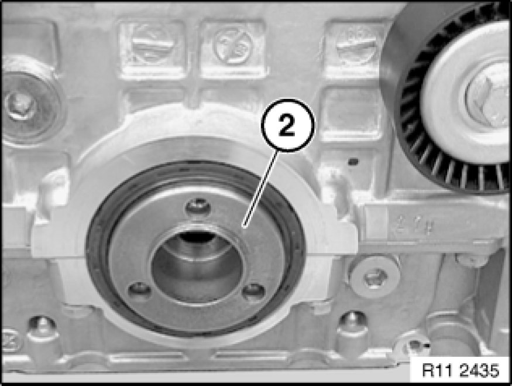

Removing and Installing/Replacing Chain Module for Oil Pump/Vacuum Pump (N52K)
11 41 010 - Removing and installing/replacing chain module for oil pump/vacuum pump (N52K)

Special tools required:
- 00 9 140
- 11 0 290 11 0 290 Holder
- 11 0 300 11 0 300 Plug Mandrel
- 11 4 120 11 4 120 Locking Pin
- 11 4 280 11 4 280 Gauge
- 11 4 360
- 11 4 362
- 11 4 440
- 11 5 200 11 5 200 Spacer Ring
- 11 9 280 11 9 280 Holder

Important!
Aluminium-magnesium materials.
No steel screws/bolts may be used due to the threat of electrochemical corrosion.
A magnesium crankcase requires aluminium screws/bolts exclusively.
Aluminium screws/bolts must be replaced each time they are released.
Aluminium screws/bolts are permitted with and without
color coding (blue).
For reliable identification:
Aluminium screws/bolts are not magnetic.
Jointing torque and angle of rotation must be observed without fail (risk of damage).

Necessary preliminary tasks:
- Remove cylinder head cover Service and Repair
- Remove oil sump
- Remove drive belt
- Remove drive belt tensioner Service and Repair
- Remove vibration damper Service and Repair
- Remove sealing cover Service and Repair for vacuum pump
Procedure on installed engine:
Turn sprocket wheel (3) with central bolt at crankshaft into position until special tool 11 0 290 11 0 290 Holder can be secured.
Simultaneously secure special tool 11 0 290 11 0 290 Holder to sprocket wheel (3) and special tool 11 4 362.
Release screw (2) for sprocket wheel (3).
Tightening torque 11 66 2AZ 11 66 Vacuum Pump.
Press timing chain with chain tensioner (1) in direction of arrow.
Disconnect timing chain with special tool 11 4 120 11 4 120 Locking Pin.
Feed out sprocket wheel (3) at hexagon head (4) of vacuum pump.
Installation Note:
If the chain module is replaced, a mounting bar (2) is already pre-installed.

Note:
To release bolt (1), insert a 6 mm drill bit between sprocket wheel and oil pump housing.
Release screw (1) for sprocket wheel.
Tightening torque 11 41 6AZ 11 41 Oil Pump with Strainer and Drive.
Release screws (2) for chain module.
Tightening torque 11 41 5AZ 11 41 Oil Pump with Strainer and Drive.
Installation Note:
Replace aluminium screws.
Secure crankshaft and camshaft with special tools 11 0 300 11 0 300 Plug Mandrel and 11 4 280 11 4 280 Gauge (refer to Checking timing Testing and Inspection).
Important!
Do not remove special tools 11 0 300 11 0 300 Plug Mandrel and 11 4 280 11 4 280 Gauge to release central bolt (1).
Employ a second person for gripping when releasing central bolt (1).
Screw special tool 11 9 280 11 9 280 Holder onto hub of vibration damper.
Release central bolt (1).
Tightening torque 11 21 1AZ 11 21 Crankshaft and Bearings.
Installation Note:
Replace central bolt (1).

Remove hub (2) towards front.
Installation Note:
Replace crankshaft radial seal Service and Repair at front.
Open screw plug on bedplate.
Tightening torque 11 11 8AZ 11 11 Crankcase.
Installation Note:
Replace aluminium screws.
Release screw for chain module (1).
Tightening torque 11 41 4AZ 11 41 Oil Pump with Strainer and Drive.
Installation Note:
Replace aluminium screws.
Remove chain module (1) in direction of arrow.
Important!
Note installation direction of sprocket wheel (2).
Collar (see arrow) on sprocket wheel (2) points to engine.
Incorrect assembly will result in engine damage.
Procedure on removed engine:
Note:
Engine is mounted on special tool 11 4 440.
Release screw (1) for sprocket wheel.
Tightening torque 11 66 2AZ 11 66 Vacuum Pump.
Release screw (2) for sprocket wheel.
Tightening torque 11 41 6AZ 11 41 Oil Pump with Strainer and Drive.
Release central bolt (3).
Tightening torque 11 21 1AZ 11 21 Crankshaft and Bearings.
Installation Note:
Mark central bolt (3) with a colored dot.
Replace central bolt (3).
Remove hub (4) towards front.
All:
Install hub with new central bolt.
Tighten down special tool 11 5 200 11 5 200 Spacer Ring with screws (1) to hub.
Do not remove special tools 11 0 300 11 0 300 Plug Mandrel and 11 4 280 11 4 280 Gauge.
Remove tensioner Service and Repair for drive belt.
Screw in special tool 11 4 362 from special tool kit 11 4 360.
Mount special tool 11 9 280 11 9 280 Holder on 11 5 200 11 5 200 Spacer Ring.
Support special tool 11 9 280 11 9 280 Holder on special tool 11 4 362.
Special tool 11 0 300 11 0 300 Plug Mandrel secures crankshaft.
Tighten central bolt to jointing torque.
Tightening torque 11 21 1AZ 11 21 Crankshaft and Bearings.
Mark central bolt and hub with paint.

Mark special tools with colored line (1).
See picture.
Important!
Do not remove the special tool while tightening the central bolt to torsion angle.
Risk of damage!
If necessary, tighten central bolt to torsion angle with special tool 00 9 140.
Tightening torque 11 21 1AZ 11 21 Crankshaft and Bearings.

Installation Note:
Replace crankshaft radial seal Service and Repair at front.
Assemble engine.